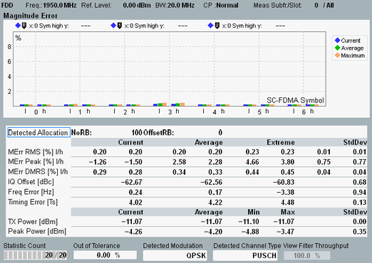

Both views show a diagram and a statistical overview of results per slot.

The diagrams (bar graphs) show the average magnitude error and phase error for each SC-FDMA symbol in the measured slot. The symbols are numbered from 0 to 6 (5) for normal (extended) cyclic prefix duration, with the reference symbol labeled 3 (2).
The measured slot is located in the configured "Measure Subframe". Only a single carrier is analyzed. For signals with carrier aggregation, you can select which carrier is measured (setting "Measurement Carrier").
The bar graphs show RMS-averaged and therefore positive values. The average runs over all modulation symbols in the SC-FDMA symbol. The R&S CMW calculates two values for each SC-FDMA symbol and displays both values, see also "Calculation of Modulation Results".
For a description of the statistical overview, see "View TX Measurement and BLER".
For the parameters at the bottom, see "Common View Elements".